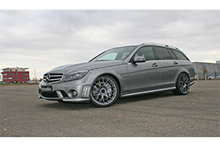

Mercedes C63 AMG
De Mercedes C63 AMG is het topmodel van Mercedes-Benz in de C-klasse, ontwikkeld en geproduceerd in samenwerking met dochteronderneming AMG. De auto wordt geproduceerd vanaf 2008, en was de opvolger van de AMG C-klasse, een auto die onder andere de nodige kritiek te verwerken kreeg over het stuurgedrag en de wegligging. De slechte recensies zorgden ervoor dat AMG ervoor koos om het model helemaal opnieuw te ontwikkelen samen met Mercedes, hetgeen resulteerde in de C63 AMG.